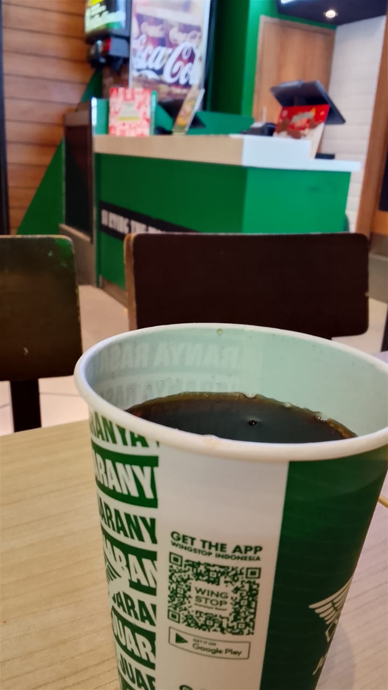

For My Wifey In Every Universe 💌
Sonnet 40: Take all my loves...
Take all my loves, my love, yea, take them all:
What hast thou then more than thou hadst before?
No love, my love, that thou mayst true love call—
All mine was thine before thou hadst this more.
Then if for my love thou my love receivest,
I cannot blame thee for my love thou usest;
But yet be blamed if thou this self deceivest
By wilful taste of what thyself refusest.
I do forgive thy robb’ry, gentle thief,
Although thou steal thee all my poverty;
And yet love knows it is a greater grief
To bear love’s wrong than hate’s known injury.
Lascivious grace, in whom all ill well shows,
Kill me with spites, yet we must not be foes.
Our Next Little Adventure!
- 📚 Book Club for Two: Choose a book to read over a few weeks. Schedule a weekly "book club" meeting to discuss the latest chapters over coffee or tea.
- 🎬 Watch a Documentary: Pick a documentary on a topic you're both curious about. Watch it at the same time and have a deep discussion afterward.
- 🍰 Bake-Off Challenge: Pick something to bake, like cookies or brownies. Follow the same recipe and compare your final products.
- 👟 Go for a "Walk and Talk": Put in your headphones and go for a walk in your respective parks or neighborhoods while on the phone. Describe the scenery, the people, and the weather.
- 👥 People-Watch: Each of you goes to a coffee shop or a park bench. Sip your drink and describe the interesting things and people you see to each other.
Some of My Favorite Moments

That one time at the cafe
My own Crescent